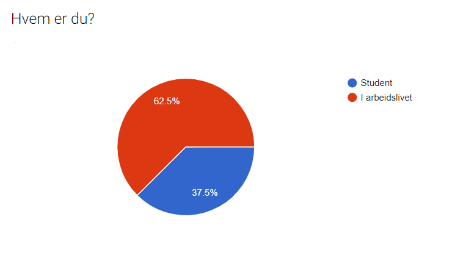

P3 Koding
Laget av: Vegard,Kaspar,Amund,Magnar og Patrick
Dokumentdetaljer
- P3 Koding
- Laget av: Vegard, Kaspar, Amund, Magnar og Patrick
- Dato: 04.11.2018
Administrative detaljer
- Klient: Vivi Lunke Røhne
- Webside: Garvergården.no
- Kontaktperson: Vivi Lunke Røhne
Tilbakemeldingsskjema
Vårt dokument spør litt om grunnleggende informasjon om personen, f.eks "Hva er din stilling (student/i arbeidslivet)", bruk av browser, hvilken enhet de bruker for å så gå videre til å spør om de hadde noen umiddelbare problemer. Deretter spør vi en del spørsmål om, struktur,utseende, navigasjon, funksjonalitet og innhold. Dette blir lagt inn på en skala fra 1-10 og det blir gitt mulighet til å gi kommentarer i et tektsfelt. Vi avslutter med å spør om brukeren har noen andre kommentarer
Tilbakemelding Testerne
Vår hovedgruppe var folk som var interessert i å leie et lokale av Garvergården A/S, med spesifikk fokus på eldre og aleneboere. Måten vi forsøkte å oppnå dette på, var ved å sende ut et google docs dokument for å danne et grunninntrykk av generelle brukere. Dette var å få en ide av hvordan nettsiden i seg selv fungerer for vanlige folk og ikke nødvendigvis folk i vår spesifikke gruppe. Dette hadde vi en moderat suksess med, ettersom at vi fikk en 62.5%/37.5% fordeling mellom personer i arbeidslivet og studenter. Vi skulle helst ha hatt større antall folk i arbeidslivet(Oppimot 80%). Dette er fordi studenter er fort på andre siden av den teknologierfaringsskalaen enn eldre, og kan dermed bli litt lite representativt.
Under vår overvåket testing tok vi utgangspunkt i å forsøke å få fokus på våre eldre brukere, og dermed se problemer som ikke er nødvendigvis åpenbare for den generelle brukeren. Dette gjorde vi ved å observere 2 personer i den ønskede brukergruppen og 2 utenfor denne gruppen. Dette ble utført ved å observere synlige konflikter og høre på kommentarer under selve prosessen. Til slutt spurte vi spørsmål i lik linje med google-docs dokumentet.(f.eks: "hva synes du om designet? ")
Platformer
devices
- Datamaskin: 33%
- Smarttelefon: 55%
- Tablets: 12%
browsers
- Google chrome 37.5%
- Mozilla Firefox 12.5%
- Safari: 37.5%
- Android Gmail browser: 12.5%
Oppsummering av tilbakemeldinger
Utseende
Fargevalget på siden fikk tilbakemeldinger om å være seriøst og gi et professjonelt inntrykk. Det ble også poengtert at de kanskje var litt for mørke.
Strukturen på siden fikk en generelt god tilbakemelding. Det var noen klager på at logoen var plassert på midten i navbaren og at navigasjonsknappene var overflødige. Utover dette virker det som at "boks" oppsettet vårt var vellykket.
Fonten og størrelsen på skriften fikk god tilbakemelding, bortsett fra en klage på at den var litt stor.
Animasjonene og "transitions" fikk gode tilbake meldinger. Det ble påpekt at de ikke var så synlige, og at dette var en god ting. Et trekk var det at siden ikke scroller ned for deg når man kommer inn på siden.
Navigasjon
Navigasjonsbaren fikk relativt god tilbakemelding. Det var en kommentar om at den føltes litt treg og "klumpete" på mobil. I tillegg fikk vi en beskjed om at det var vanskelig å finne frem til index-siden når man er på en av undersidene.
Når det kom til "cards" og navigasjonsknappene, var det blandet tilbakemelding. Cards fikk gode tilbakemeldinger, men det ble påpekt at å ha en meny i kortene var litt overføldig med tanke på navigasjonsbaren også er på index-siden. Det samme gjaldt for navigasjonsknappene.
Innhold
Teksten var presentert på en god måte i følge testerne. Det var en klage på at det kunne ha vært litt mer luft.
Bildene fikk også gode tilbakemeldinger. En klage på lav oppløsning.
Funksjonalitet
Bildegalleriet fikk generelt god tilbakemelding. Ingen kommentarer.
Knappen vår for endring av tekststørrelse fikk medium til god respons. Flere svarte at funksjonen ikke var påpekt på siden særlig bra, og dermed var det flere som ikke innså at dette var en funksjonalitet. Det ble også påpekt at de fleste nettlesere har slik funksjonalitet innebygd og at det dermed var overfødlig. Utover dette viste det seg at selve løsningen var god, og våre eldre testere likte funksjonaliteten.
Problemer
Det viser seg at Safari-mobile ikke støtter sticky.
Vår respons
Utseende
Fargevalget ble gjort på bakgrunn av at det skulle se professjonelt og seriøst ut. Som et resultat av dette ble de kanskje litt mørke, men vi syntes at fargene tjener sitt formål godt. Dermed er vi fornøyde med denne tilbakemeldingen.
Utseende på navigasjonsbaren og dette med at logoen var midtplassert ikke var så bra er en rettferdig tilbakemelding. Det er kanskje litt stilistisk med tanke på at vi går for et seriøst design. Denne kunne selvfølgelig vært strukturert annerledes men vi liker det preget den setter på siden.
Det ble påpekt at teksten var litt stor. Dette var jo faktisk en av de tingene vi gikk inn for, ettersom at siden potensielt kommer til å bli brukt av eldre mennesker med dårlig syn. Vi kunne kanskje ha gjort den litt mindre og heller utnyttet tekststørrelse funksjonaliteten bedre for å forhindre dette, men dette ville igjen gjort ting mer innviklet for de mer teknisk utfordrede.
At siden ikke scroller ned for deg når man kommer inn kunne og kanskje burde være en funksjonalitet. Dette hadde gjort siden mer intuitiv. På en annen side tror vi det hadde vært ufordrende å gjøre dette på en god måte uten å ta kontroll vekk fra brukeren. En annen løsning hadde vært å redusere høyden på bildene på forsidene slik at det ikke er like langt å scrolle for å komme til innholdet.
Navigasjon
At nav-baren på mobil virker treg og noe "klumpete" er forståelig. Som en løsning på dette har vi vurdert å legge til noen transitions for å gi den en litt glattere opplevelse. At det er vanskelig å finne frem til index-siden fra undersidene hørte vi fra noen av våre eldre testere. Dette er noe vi ikke tenkte over, ettersom at for oss er det ganske naturlig at å trykke på logoen leder tilbake til index-siden. Dette burde vi selvfølgelig ha tatt hensyn til ettersom at vi prøver å appellere til folk som nødvendigvis ikke er så "nettvante". Vi har for øyeblikket ingen god løsning på dette.
Originalt hadde vi ikke planlagt å ha nav-baren på index siden, noe som gjorde cards litt overflødig i etterkant. Navigasjonsknappene skulle originalt være for å referere rundt på den gjeldende siden, men ble endret ettersom at vi ikke hadde like mye innhold på siden som forventet. Dermed syntes vi også at disse har blitt overflødige. For å korrigere dette har vi tenkt at navigasjonsknappene og menyene på "cards" burde fjernes. "Cards" ville da kun hatt et bilde av og navnet på den respektive gården, i tillegg til kanskje en liten tekst under. Da ville hele kortet linke til hovedsiden til sin respektive byggning.
Innhold
At teksten kunne hatt litt mer luft er vi forsåvidt enig i. Dette kunne vi gjort med å for eksempel endre max antall bokstaver på en linje.
At bildene hadde lav oppløsning skjønner vi ikke helt, med mindre testeren brukte en skjerm med veldig høy oppløsning. Bildene er allerede ganske store og vi tenker at å ha de noe større ville gjort siden unødvendig treg.
Funksjonalitet
At tekst-endring-knappene er overflødig fordi nettlesere har dette native er sant, og det er vi inneforstått med. Tanken bak funksjonaliteten var den at folk som er mindre nettvante, intuitivt skulle kunne endre teksten i et desktop-miljø. Vi syntes fortsatt at tanken er god, men skjønner at den kanskje ikke stikker godt nok ut. Dette har vi snakket om at kan fikses ved å bruke noen smarte transitions og litt tekst ved siden av. Feks at når man ser boksen først får den et lite utskudd som sier "endre tekststørrelse her", eller at det står hvor mye zoom man har akkurat nå.
Problemer
Vi oppdaget under testingperioden at "sticky" ikke fungerer på Safari-mobile. Dette har vi tenkt å løse ved å fjerne cover-bildene på "hovedsidene" og heller legge til en tittel under navbaren. På denne måten får vi ikke problemer med Apple-produkter i tillegg til at nettsiden laster raksere på mobiler.